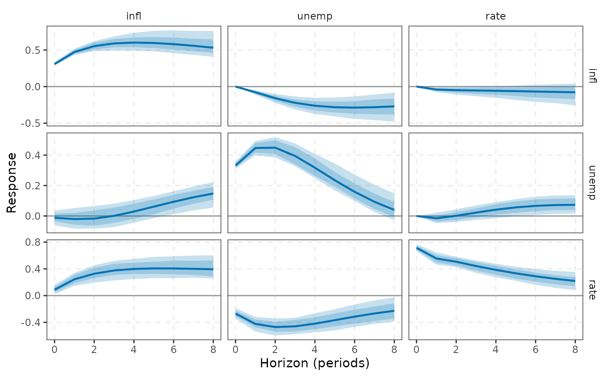
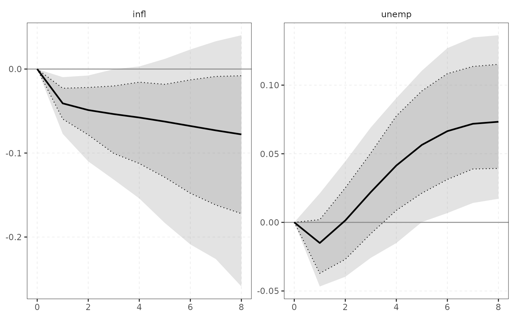
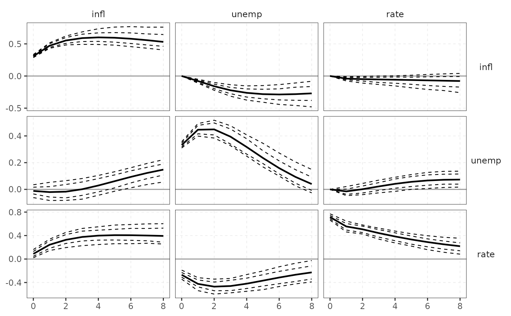
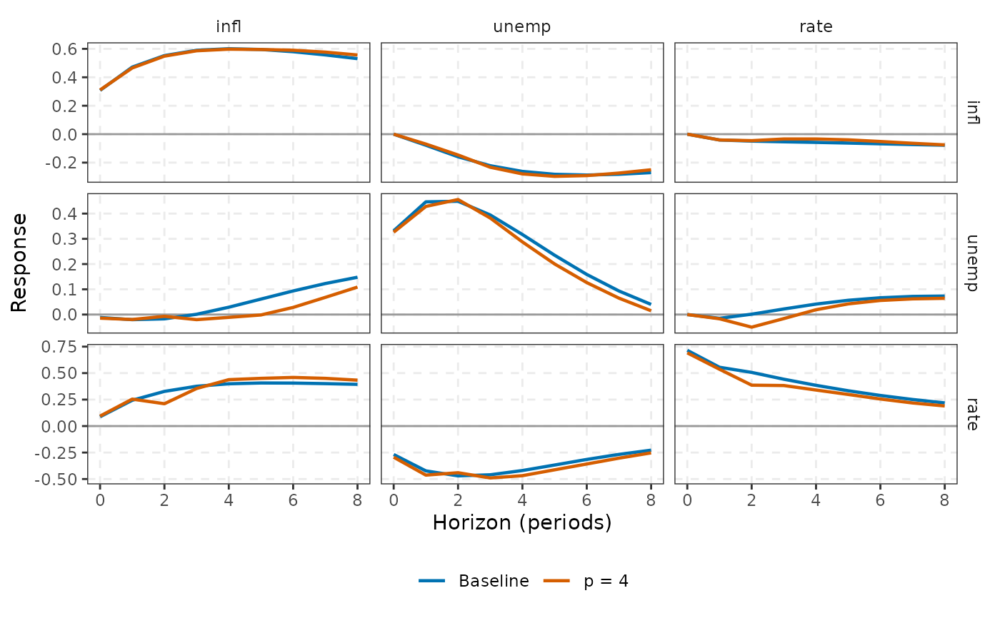
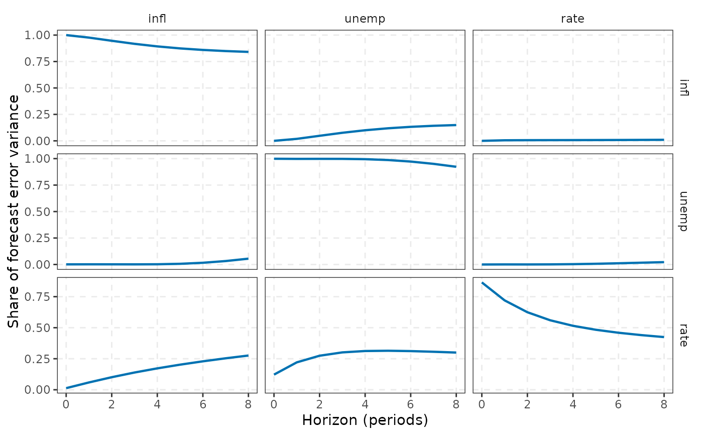

Grid of panels (rows: responding variable, columns: shock) with the point or
median response and nested ribbons for each stored level, widest lightest.
plot() prints the same ggplot and returns it invisibly.
Usage
# S3 method for class 'varm_irf'
autoplot(
object,
shocks = NULL,
responses = NULL,
ci = c("band", "line", "none"),
compare = NULL,
...
)
# S3 method for class 'varm_fevd'
autoplot(
object,
shocks = NULL,
responses = NULL,
ci = c("band", "line", "none"),
compare = NULL,
...
)
# S3 method for class 'varm_dyn'
plot(x, ...)Arguments
- object, x
a
varm_irforvarm_fevdobject.- shocks, responses
<
tidy-select> subsets of the shocks and responding variables, e.g.shocks = rate.- ci
"band"(shaded ribbons, default),"line"(dashed bounds) or"none".- compare
named list of further
varm_irf/varm_fevdobjects to overlay onobject(labelled "Baseline" and the list names), one colour each.- ...
unused.
See also
Other plotting:
autoplot.varm_draws(),
autoplot.varm_forecast(),
autoplot.varm_hd(),
theme_varm()
Examples
fit <- varm(yraw, p = 2)
r <- irf(fit, horizon = 8, ci = "mc", nboot = 100)
ggplot2::autoplot(r)

ggplot2::autoplot(r, shocks = rate, responses = c(infl, unemp))

ggplot2::autoplot(r, ci = "line")

r2 <- irf(varm(yraw, p = 4), horizon = 8, ci = "none")
ggplot2::autoplot(r, compare = list("p = 4" = r2), ci = "none")

ggplot2::autoplot(fevd(fit, horizon = 8, ci = "none"))
